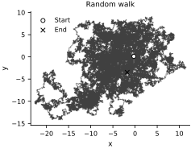

Pseudorandom Numbers without Side Effects#
Many numerical libraries draw random numbers by updating hidden generator state. Hidden updates make a computation depend on the order in which sampling calls occur. JAX instead represents pseudorandom state with explicit keys, so a sampling operation is a pure function of its key and other arguments. This design makes random computations reproducible and compatible with JAX transformations.
See the JAX pseudorandom-number guide for further details. A key is created from an integer seed:
import jax.numpy as jnp
import jax.random as random
key = random.key(0)
A typed key is a scalar JAX array with a special random-key data type. Its printed representation also displays the underlying key data:
key
Array((), dtype=key<fry>) overlaying:
[0 0]
When sampling from a distribution, we explicitly pass the key. Here is a sample from a standard normal:
random.normal(key, shape=(2, 2))
Array([[ 1.6226422 , 2.0252647 ],
[-0.43359444, -0.07861735]], dtype=float32)
For this demonstration only, we reuse the same key. Because sampling does not modify the key, this produces the same sample:
random.normal(key, shape=(2, 2))
Array([[ 1.6226422 , 2.0252647 ],
[-0.43359444, -0.07861735]], dtype=float32)
The key remains unchanged. In ordinary sampling code, a consumed key should not be reused:
key
Array((), dtype=key<fry>) overlaying:
[0 0]
To obtain a fresh sample, split the key into a new retained key and a one-use subkey:
key, subkey = random.split(key)
key
Array((), dtype=key<fry>) overlaying:
[1797259609 2579123966]
subkey
Array((), dtype=key<fry>) overlaying:
[ 928981903 3453687069]
Splitting deterministically derives new keys that are independent in the pseudorandom sense. We use the subkey once to draw the sample and retain key for later computations:
random.normal(subkey, shape=(2, 2))
Array([[-2.4424558 , -2.0356805 ],
[ 0.20554423, -0.3535502 ]], dtype=float32)
A stochastic computation must therefore receive its keys explicitly and return any key needed later. Consider a \(d\)-dimensional Gaussian random walk. Let \(x_0 \in \mathbb{R}^d\) and \(\sigma>0\). The state evolves according to
where \(z_0,z_1,\ldots\) are independent random vectors with
def rw_step(x, sigma, key):
"""A single step of the random walk."""
key, subkey = random.split(key)
z = random.normal(subkey, shape=x.shape)
return key, x + sigma * z
The step returns both the updated key and the updated state. We can compose it in a JIT-compiled Python loop:
from functools import partial
from jax import jit
from jax import lax
@partial(jit, static_argnums=(3,))
def sample_rw(x0, sigma, key, n_steps):
"""Sample a random walk."""
x = x0
xs = [x0]
for _ in range(n_steps):
key, x = rw_step(x, sigma, key)
xs.append(x)
xs = jnp.stack(xs)
return key, xs
Assigning both outputs preserves the updated key for the next stochastic computation:
key, short_walk = sample_rw(jnp.zeros(2), 1.0, key, 10)
short_walk
Array([[ 0. , 0. ],
[-1.2574776 , -0.4016044 ],
[-2.6452458 , 0.37324995],
[-4.947512 , 0.42602792],
[-5.9622927 , 2.0133286 ],
[-6.1604714 , 2.808919 ],
[-6.462665 , 1.669248 ],
[-7.2054353 , 2.6440904 ],
[-7.4058185 , 2.5296435 ],
[-7.7235856 , 2.6033778 ],
[-8.571129 , 3.110956 ]], dtype=float32)
A Python loop inside jit is unrolled during tracing, so a large n_steps produces a large compiled computation. lax.scan represents the recurrence as a single loop primitive and keeps the compiled computation compact:
@jit
def sample_rw_scan(x0, sigma, keys):
"""Sample a random walk."""
def step_rw(prev_x, key):
"""A single step of the random walk."""
z = random.normal(key, shape=prev_x.shape)
new_x = prev_x + sigma * z
return new_x, new_x
return lax.scan(step_rw, x0, keys)[1]
n_steps = 100_000
key, walk_key = random.split(key)
keys = random.split(walk_key, n_steps)
walk = sample_rw_scan(jnp.zeros(2), 0.1, keys)
walk.shape
(100000, 2)
Let’s plot it:
fig, ax = plt.subplots(figsize=FIGURE_SIZES["half_standard"])
ax.plot(walk[:, 0], walk[:, 1], color="0.25", lw=0.55, rasterized=True)
ax.scatter(
walk[0, 0], walk[0, 1], marker="o", s=26,
facecolor="white", edgecolor="black", linewidth=0.9,
label="Start", zorder=3,
)
ax.scatter(
walk[-1, 0], walk[-1, 1], marker="x", s=30,
color="black", linewidth=1.0, label="End", zorder=3,
)
ax.set(xlabel="x", ylabel="y", title="Random walk")
ax.set_aspect("equal", adjustable="datalim")
ax.legend(loc="best")
finalize_axes(keep_box=False)
plt.show()

The returned array contains \(x_1,\ldots,x_{n_{\mathrm{steps}}}\). The scan generates 100,000 steps while keeping the recurrence compact. Randomness remains explicit because every increment is determined by its input key.